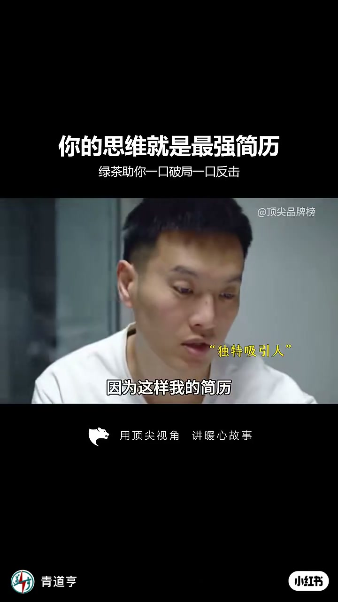
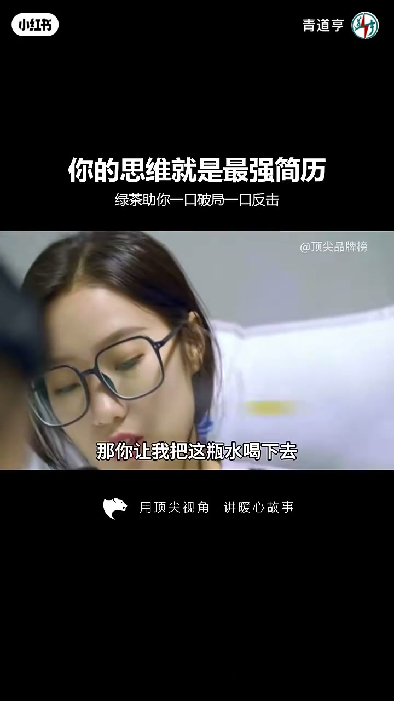

内容要点
知识结构
[00:00→00:04]
半张简历
面试官问简历为何只有半张——答：这样才能放在最上面。
[00:04→00:12]
水的破局
问销售最重要的是思维还是技巧；用水瓶演示「不让你喝却能让你吐」。
[00:12→00:24]
文案收束
片头片尾强调思维是隐形最强简历；履历可包装，处理问题方式骗不了人。
总结
简历包装是门面，遇事破局方式才是真实简历。
图文实录
半张简历抢置顶
00:00 – 00:04
白衬衫男子抬手指强调，面试开场：「你来应聘的是吧，你的简历怎么只有半张？」回答干脆：「因为这样我的简历才能放在最上面。」用极端操作把「被看见」本身当成第一技能。
你的简历怎么只有半张
因为这样我的简历才能放在最上面

[00:03] 开场框题：你的思维就是最强简历
Opening thesis: your mindset is the strongest resume
用水演示破局思维
00:04 – 00:12
面试官追问销售最重要的是思维还是技巧。候选人让对方喝水，随即说：「我不让你喝下去，但我能让你吐出来。」旁白式反应「牛」——把戏想表达的是：换约束条件、倒逼结果，而不是背话术。
那你让我把这瓶水喝下去
我不让你喝下去
但我能让你吐出来

[00:08] 水瓶桥段：不让你喝，却能让你吐
Water-bottle bit: I won't let you drink, but I can make you spit
文案：思维骗不了人
00:12 – 00:24
短片后半把观点钉在包装文案上：简历可以包装、履历可以修饰，但处理问题的思维骗不了人——遇事抱怨还是破局，情绪上头还是理性解决。片尾还有一句对白碎片：「那我不准你不已经喝了吗」，把刚才的水戏再拧一把。
那我不准你不已经喝了吗
[00:14] 继续演绎：提问问题与破局姿态
Continues: posing the question and a breakthrough stance
[00:20] 收束：学历敲门砖，思维护城河
Close: diploma opens doors; mindset is the moat